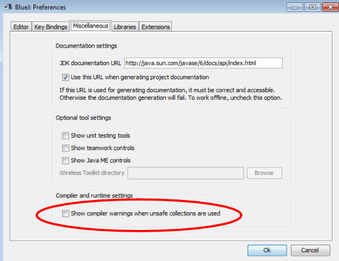
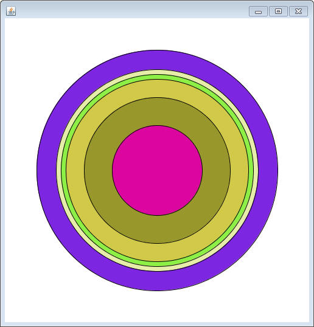
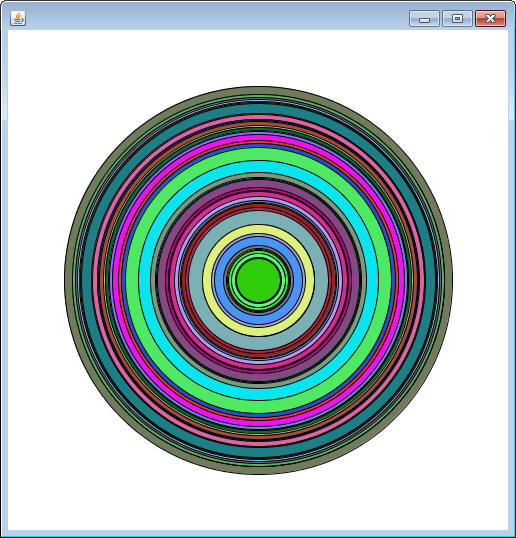

In the past, we’ve used a Selection Sort strategy to help us sort an array of Strings. While Strings have many methods to choose from, the sorting relied purely on the compareTo method. What Mr. Sacco hasn’t told you is that Strings actually implement an interface called Comparable. Read the Comparable interface below. It acts a little differently than what you’ve seen before
DO NOT COPY TO YOUR PROJECT. IT IS A COMMON INTERFACE
public interface Comparable<T>
{
int compareTo(T other)
}
What's with the <T>?
You may have noticed that the word comparable is followed by a T, and that the data type of the compareTo method is a T as well. The purpose of the comparable interface is to generalize objects that can compare themselves to others of the same type. That type is not specified in the interface, so it must be included when the class is defined. For example, the String class would have the following header:
public class String implements Comparable<String>
Putting <String> at the end of Comparable means that the compareTo method
will be able to compare itself to another String.
Suppressing compiler warnings:
The way that we're using Comparable makes the compiler a little nervous. It will pop up with warning windows every time you compile, even though your code will work. To suppress those warnings, go to BlueJ's preferences, navigate to the Miscellaneous tab, and make sure that the "Show compiler warnings when unsafe collections are used" is unchecked.

Sorting with Polymorphism:
Now that we know about the Comparable interface our previous project that only sorts an array of Strings is too restrictive. Since the only method required to sort is the compareTo method, we should have a sorting method that doesn’t specify which type of object it’s sorting.
Create a class named Sorter, which will be responsible for helping sort arrays of Comparables instead of specifically Strings (hooray Polymorphism). You may add other helper methods you wish(such as the indexOfLowest method), but you must have the following headers:
//uses a selection sort to put the parameter array in order public static void selectionSort(Comparable[] arr) //returns the ‘greatest’ value in the array. You should not change the order of the array to do so public static Comparable findGreatest(Comparable[] arr) //returns the ‘lowest’ value in the array You should not change the order of the array to do so public static Comparable findLowest(Comparable[] arr)
Test your code out with the following runner method, which creates twenty random letters and tests each method with them.
public static void stringTest()
{
String[] strs = new String[20];
for( int i =0; i < strs.length;i++)
{
int val = (int)(Math.random()*26)+65;
strs[i] = (char)val+"";
}
System.out.println("Before sort: "+java.util.Arrays.toString(strs));
System.out.println("Lowest Value: "+Sorter.findLowest(strs));
System.out.println("Greatest Value: "+ Sorter.findGreatest(strs));
System.out.println("Unchanged Array: "+java.util.Arrays.toString(strs));
Sorter.selectionSort(strs);
System.out.println("Sorted Array: "+java.util.Arrays.toString(strs));
}
More classes that implement Comparable: The Wrapper Classes
The whole purpose of creating a Comparable sorter method is that it will work with more than just Strings. There are many other classes that also implement comparable and our method should work with them too.
One problem that may come up is the need to sort an array of doubles or ints. The issue is that they don't have a compareTo method (they are primitives that have no methods) that will aid in the sorting. That would require a special method for ints and another for doubles. Very tiring stuff.
The Wrapper Classes:
Since doubles and ints are primitives that cannot be trated like objects, there are a few classes, known as the wrapper classes, that are meant to be the object version of the primitives. Essentially they have one instance field of the type they're representing, a "get" method that will return that instance field, and a compareTo method for sorting. Notice that each one is an object, so they start with a capital letter.
Each of these objects implement Comparable, and therefore we should be able to use them with our sorting method. Copy the follwing methods to your project. Because of Polymorphism, they should run without needing any more code.
public static void integerTest()
{
Integer[] ints = new Integer[10];
for( int i =0; i < ints.length;i++)
{
ints[i] = new Integer((int)(Math.random()*100));
}
System.out.println("Before sort: "+java.util.Arrays.toString(ints));
System.out.println("Lowest Value: "+Sorter.findLowest(ints));
System.out.println("Greatest Value: "+ Sorter.findGreatest(ints));
System.out.println("Unchanged Array: "+java.util.Arrays.toString(ints));
Sorter.selectionSort(ints);
System.out.println("Sorted Array: "+java.util.Arrays.toString(ints));
}
public static void doubleTest()
{
Double[] dubs = new Double[10];
for( int i =0; i < dubs.length;i++)
{
dubs[i] = new Double(Math.random()*100);
}
System.out.println("Before sort: "+java.util.Arrays.toString(dubs));
System.out.println("Lowest Value: "+Sorter.findLowest(dubs));
System.out.println("Greatest Value: "+ Sorter.findGreatest(dubs));
System.out.println("Unchanged Array: "+java.util.Arrays.toString(dubs));
Sorter.selectionSort(dubs);
System.out.println("Sorted Array: "+java.util.Arrays.toString(dubs));
}
More Polymorphism!!!
Copy the Circle class below into your project. This class has instance fields to represent the size, location, and color of a Circle. You can construct it with a location, but the radius and color are always randomized. It also has a method named 'paintSelf', which will draw it on any Canvas object that is given to it.
import sacco.*;
import sacco.gui.*;
public class Circle
{
private int x,y,radius;
private Color color;
public Circle(int x, int y)
{
this.x = x;
this.y = y;
radius = (int)(Math.random()*180)+20;
color = new Color((int)(Math.random()*256),(int)(Math.random()*256),(int)(Math.random()*256));
}
public int getRadius()
{
return radius;
}
public void paintSelf(Canvas c)
{
c.setColor(color);
c.fillOval(x-radius,y-radius,2*radius,2*radius);
c.setColor(Color.BLACK);
c.drawOval(x-radius,y-radius,2*radius,2*radius);
}
}
This class is not meant to run on its own. It's meant to be one of many Circles that appear on a window. Copy the CircleViewer class below into your project. It holds an array of Circles which are passed in at construction. The paintWindow method (which controls what is painted on the SaccoWindow) simply loops through and tells all of the Circles to paint themselves using the SaccoWindow's Canvas object.
import sacco.*;
public class CircleViewer extends SaccoWindow
{
private Circle[] circles;
public CircleViewer(Circle[] myCircles)
{
circles = myCircles;
}
public void paintWindow(Canvas c)
{
for(int i=circles.length-1; i>=0; i--)
{
circles[i].paintSelf(c);
}
}
}
Put the following runner method into the CircleViewer class. It simply creates 50 Circles centered around the point (250,250), and then constructs a CircleViewer with them.
public static void main()
{
Circle[] circs = new Circle[50];
for(int i=0; i<circs.length; i++)
{
circs[i] = new Circle(250,250);
}
CircleViewer c = new CircleViewer(circs);
c.setVisible(true);
}
If you run the main method, you notice that you don’t see all 50 of the Circles at the same time.

This is because they’re painted to the screen in the order that they appear in the array. Since the array isn't sorted, some larger circles get painted over the smaller ones. Add the following onMousePress method to the CircleViewer class, which uses your selectionSort method to sort the array when you click it.
public void onMousePress(MouseEvent m)
{
Sorter.selectionSort(circles);
}
When you add an onMousePress method to the SaccoWindow it allows you to decide what happens when the mouse is clicked inside the window. In this case, the array of Circles is given to your sorting method that you've created for this assignment. At the moment it will not compile because Circle is not a Comparable (yet). We can fix that. Change the Circle class header to implement the Comparable interface.
public class Circle implements Comparable<Circle>
Again notice that ‘Circle’ is in the angle braces. This is important to make your compareTo method work.
Now add the corresponding compareTo method, which will take in a Circle as a parameter. Circles compare each other using their radius. The Circle with the largest radius is considered the ‘greater’ Circle.
Compile your program to make sure that you’ve done it properly. Run the
program and make sure that when you click on the window it sorts them, allowing
you to see every single Circle.
